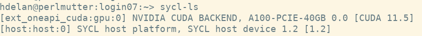
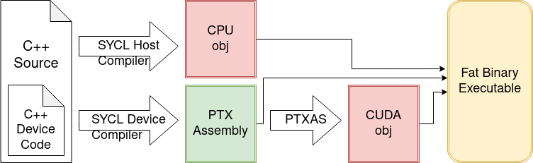

## Check your Installation
* Check for available devices using `sycl-ls`

## DPC++ for CUDA
Under the Hood

## DPC++ for CUDA
Under the Hood
* DPC++ compilation subprocesses will be printed if the `-###` compiler flag is used.
- `clang++ -fsycl -fsycl-targets=nvptx64-nvidia-cuda myfile.cpp -###`
## DPC++ for CUDA
Under the Hood
* Temporary files can be saved by using the `--save-temps` flag. Must be done from within an empty directory.
- `clang++ -fsycl -fsycl-targets=nvptx64-nvidia-cuda ../myfile.cpp --save-temps`
#### Exercise
Code_Exercises/Exercise_1_Compiling_with_SYCL/source
Configure your environment for using SYCL and compile a source file with the SYCL compiler. Specify the runtime device using `SYCL_DEVICE_FILTER`.